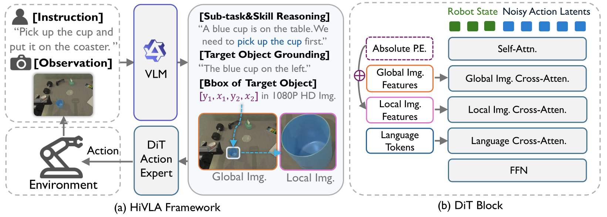

摘要总结
正文里它不是简单端到端 VLA，而是把高层语义规划和低层动作控制拆开：VLM 先做 task decomposition + visual grounding，输出子任务和目标框；再由 flow-matching DiT 动作专家结合全局图像、局部目标 crop 和语言技能信息生成动作。实验显示它在 RoboTwin 2.0 上比 H-RDT 和 π0 都强，尤其擅长长时程技能组合和小目标精细操作。
实现概率
78%
开源
uncertain —— 文中有项目页，但我没在正文里看到明确 repo 链接。
可部署
uncertain —— real-world 结果不错，但整体是多模块系统，落地需要较多工程整合。
